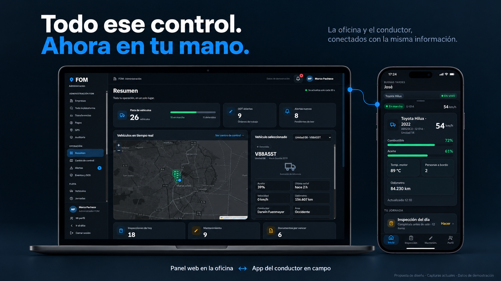
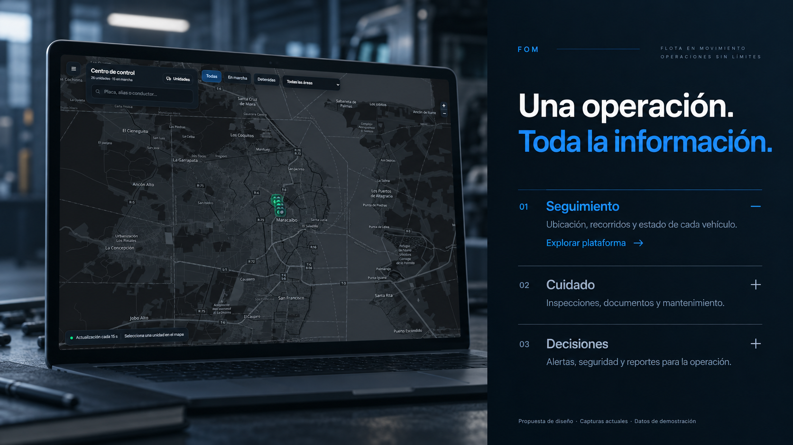
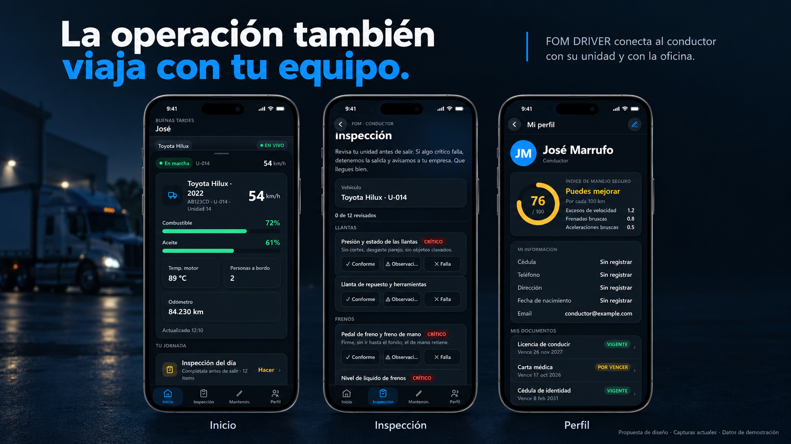
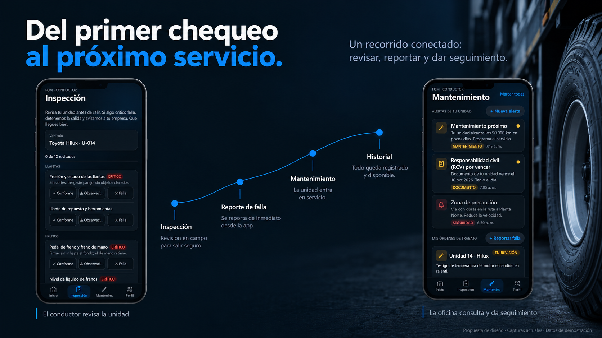
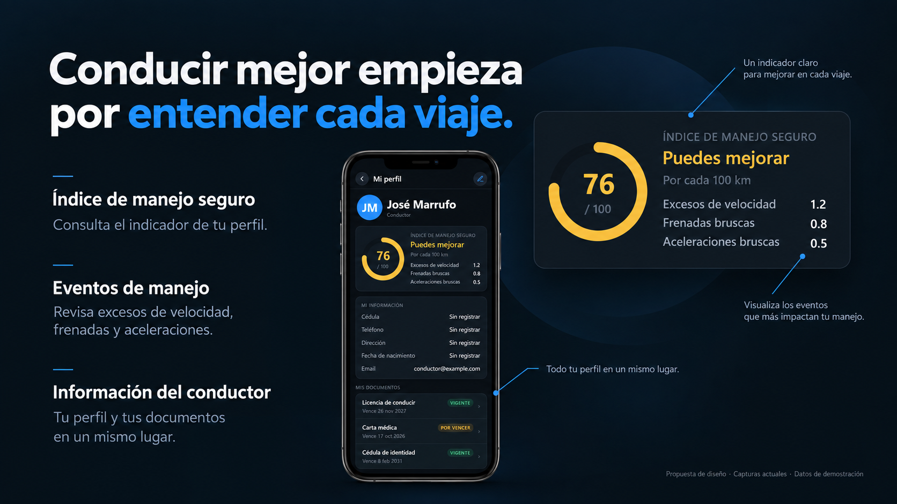

FOM · Propuestas para Inicio1. Panel y app conectados
Abrir imagen completa ↗
2. Servicios sin tarjetas
Abrir imagen completa ↗
3. Tres pantallas de la app
Abrir imagen completa ↗
4. Del chequeo al mantenimiento
Abrir imagen completa ↗
5. Índice de conducción
Abrir imagen completa ↗